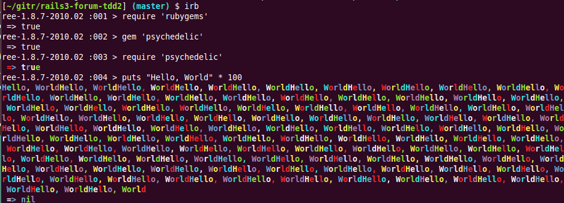

Awesome syntax colorizer in Ruby
Psychedelic
Psychedelic is an amazing syntax colorizer library
that automatically any output in your console.
It supports Ruby, Python, Perl, C++, Brainfuck... and any
language you know magically.
Oh sorry, It cannot colorize whitespace now.
Release Log
- 0.0.2: First release, 2011/04/01
Screenshots
I got some cool screenshots
IRB

Rspec
Rails Server
What are you waiting? Use it in your project TODAY! RIGHT NOW!
(if it's April 1 in your timezone LOL)
Installation
Execute in your shell:
gem install psychedelic
How to use
If you are using bundler (ex. rails3),
add the following ling into your Gemfile:
gem 'psychedelic'
You can do this in irb and other Ruby programs:
require 'rubygems'
gem 'psychedelic'
require 'psychedelic'